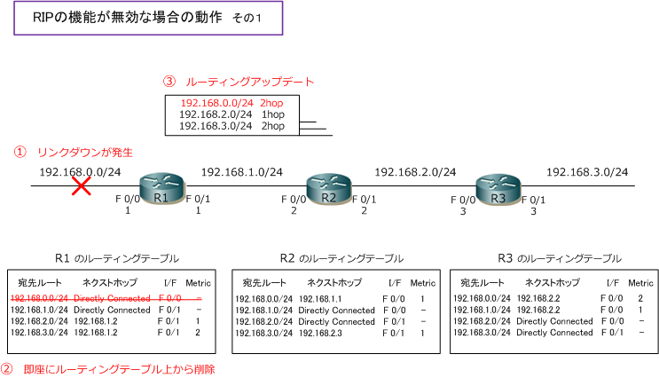
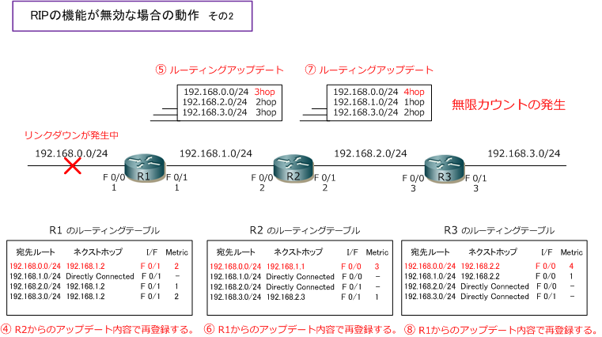
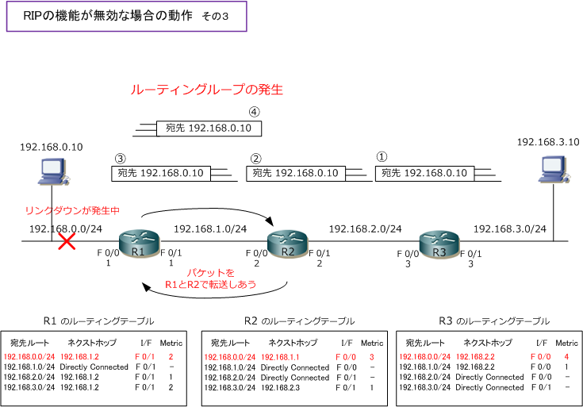

Distance Vector Routing - Part 2
ディスタンスベクタ型ルーティングプロトコルの機能
ディスタンスベクタ型のルーティングプロトコルでは、無限カウントやルーティングループを防ぎネットワーク の状態に変化した後、ルーティングテーブルを更新するプロセスを速くする（収束を速くする）機能があります。 ディスタンスベクタ型のルーティングプロトコルであるRIPでは以下の機能がデフォルトで有効になっています。
| 主な5つの機能 | 説明 |
|---|---|
| スプリットホライズン | あるインターフェースから受信した経路情報を、同じインターフェースから送信しない機能 |
| ルートポイズニング | リンクダウンしたインターフェースの経路情報のメトリック値を最大値にして隣接ルータに通知する機能 隣接ルータから一定時間 (180秒間) 経路情報を通知されなかった場合にも、隣接ルータに通知する。 |
| ポイズンリバース | 到達不能な経路情報を受け取った場合 （RIPの場合はメトリック値16の経路情報を受け取った場合）に 受け取った経路情報のメトリック値を最大値にして同じインターフェースから隣接ルータに通知する機能 |
| ホールドダウンタイマー | ある経路情報がダウンした事を示すアップデートを受信した時、その経路情報を誤って再登録しないよう その経路情報がダウンした事をネットワークの全てのRIPルータが認識できるようにするための待ち時間。 |
| トリガードアップデート | 定期アップデートとは別にネットワークの状態(メトリック値)に変化があると即送信されるアップデート。 トリガードアップデートではルーティングテーブル全体ではなくて、変更のあった経路だけアップデート。 |
上記の5つの機能が無効な場合
全てのルータでRIPが起動しているとします。① R1のFa0/0がリンクダウンした場合、② [ 192.168.0.0/24 ] の経路情報が即座にルーティングテーブルから削除されます。そこで偶然、R2からR1へ定期的なルーティング アップデートが送信されたとします。その時、上記で紹介した5つの機能が無効な場合 ③の内容で送信されます。

③のルーティングアップデートを受信したR1は、ルーティングテーブルから削除したはずの 192.168.0.0/24 の経路情報を④の内容でルーティングテーブルに再登録します。そしてR1からの定期的なルーティングアップ デートは⑤の内容となります。R2にとって[ 192.168.0.0/24 ]の経路情報のメトリック値は、もともと[ 1 ]で あるので、すでに存在する経路情報の方が最適ルートなのですが、[ 192.168.0.0/24 ] の経路情報は、もとは R1から通知された経路情報なので、メトリック値として最適ルートでなくても ⑥ の内容として再登録します。
一方、R1から通知された[ 192.168.2.0/24 ] と [ 192.168.3.0/24 ]の経路情報はR1から通知された経路では ないので、メトリック値として最適な既存の経路情報が採用されてルーティングテーブルに変化はありません。
同じ考え方で⑦と⑧の内容が発生します。以降もR1⇔R2⇔R3の間でやりとりされる定期的なアップデートで [ 192.168.0.0/24 ] の経路情報のメトリックが増え続ける無限カウントが発生します。とはいえ、RIPの場合 最大ホップ数が [ 15 ] であり、ホップ数が [ 16 ] の経路情報はルーティングテーブルには再登録されません。

ホップ数の最大値は[ 16 ]として定義されているので無限カウントは最終的にストップしますが、無限カウント の発生は阻止できません。そして、この無限カウントの発生中にリンクダウンが発生した 192.168.0.0/24 宛て のパケットが発生した場合はルーティングループが発生してしまいます。192.168.3.10 のクライアントPCから 192.168.0.10 のPCにパケットを送信したとします。R3⇒R2⇒R1とルーティングテーブルの内容にしたがって 転送されますが、R1のルーティングテーブルではネクストホップが 192.168.1.2 のR2となっているため、R2に 転送し返します。しかし、R2でも 192.168.0.10 宛てのネクストホップが R1 になっているので再びR1へ転送。 このように 192.168.0.10/24 宛のパケットはR1とR2の間で転送を繰り返すルーティングループが発生します。

ディスタンスベクタ型のルーティングプロトコルの問題点は、次ページ以降で解説するスプリットホライズン、 ルートポイズニング、ポイズンリバース、ホールドダウンタイマー、トリガードアップデートにより解決します。